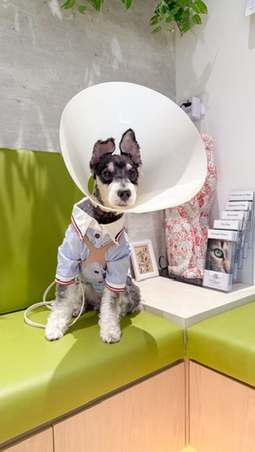

Every time Kristin wanted to take Sunday out, she hit the same wall. Google Maps would say a place was pet-friendly. She'd show up — two outdoor tables, no shade, steps nobody mentioned. Singapore in the afternoon heat, with a nervous dog who doesn't like crowds. Sunday would shut down. The outing would fall flat. And she'd go home wondering why this was so hard.
She wasn't looking for a lot. A café where Sunday could actually sit comfortably. A park with enough space that he wouldn't feel cornered. A place where she could have brunch on a weekend and genuinely enjoy his company — not spend the whole time worrying about whether he was okay.
But the places side of it was only half the picture.
At one year old, Sunday was diagnosed with bilateral cataracts. He went through surgery — and with it came eight different eye drops at peak, four times a day, on alternating schedules. Some drops were bitter. He'd drool. He'd be uncomfortable. Kristin had to track everything: which drop, which eye, which hour, which day of the taper.
She had folders on her phone. Sticky notes. Calendar reminders. Messages to her husband for when she traveled for work. When the vet asked "when did this start?" she'd be scrolling through her camera roll hoping she'd saved something.
Three rounds of surgery. Secondary glaucoma three weeks after the second. Weeks of clinic visits with instruments near his eyes. Sunday lost what should have been his prime time as a puppy — toys put away, play restricted, no rough-housing. He went through more in his first two years than most dogs do in a lifetime.
And through all of it, Kristin was tracking everything by hand, in apps that weren't built for this, in notes nobody could find.
She isn't a developer. She didn't come from tech. She came from three years of being Sunday's primary caregiver and realising there wasn't a single app that did what she actually needed. So she decided to build it herself — not because she knew how, but because she knew it needed to exist.
If she wouldn't use it, it was useless. That was the only rule.

till date
4 times a day